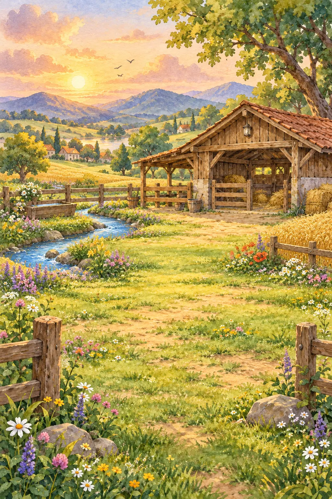
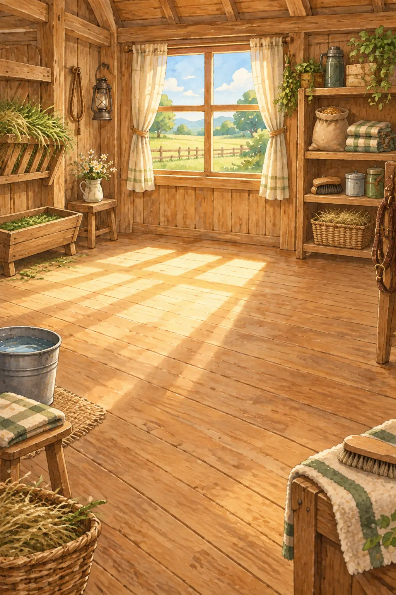
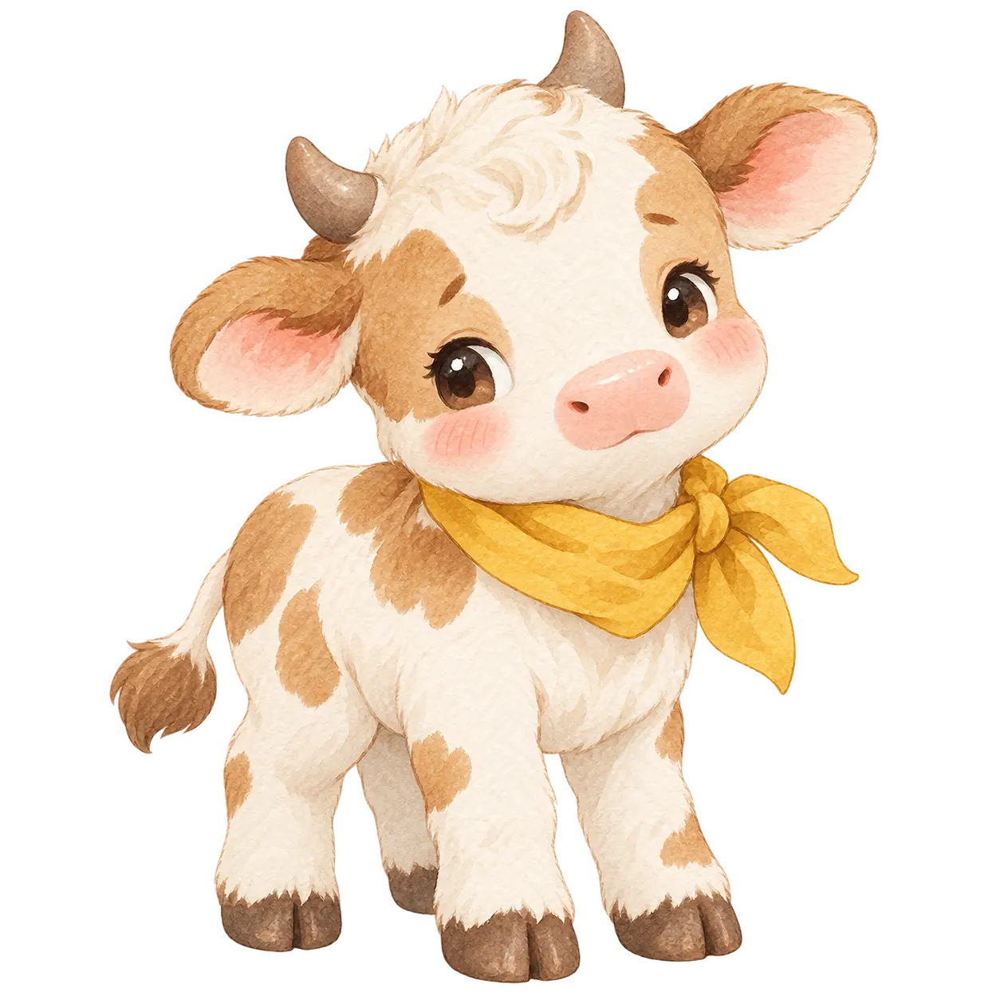
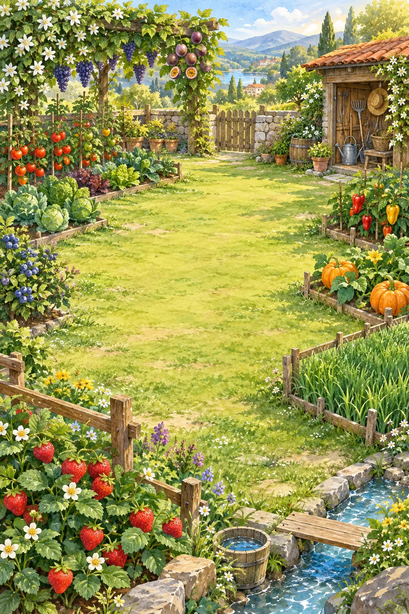
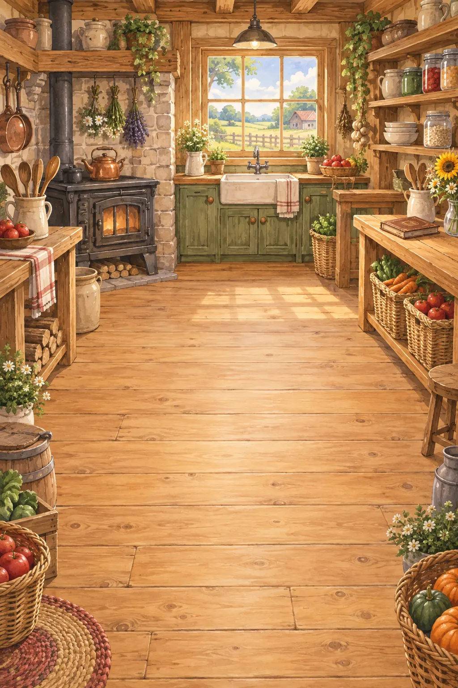

XIAOPING'S LITTLE FARM
牛牛住在花草、木屋和暖风之间。小萍准备好行囊，它就会从贵阳出发，把一路风景寄回家。



作物会按真实时间慢慢成熟，收好后就会进入仓库。

健康与心情
“小萍，沿途的风景也要一站一站寄给你。”
牛牛正在路上。
便当必须有。食物能量决定牛牛从贵阳能飞多远；护身符管幸运，道具影响途中场景。
信箱还安安静静的。
还没有旅行纪念品
小萍可以照顾家里的每个角落。
种下后就让阳光和时间慢慢照顾它。
帐篷去露营，木碗找水边，提灯拍夜景；护身符会带来幸运。